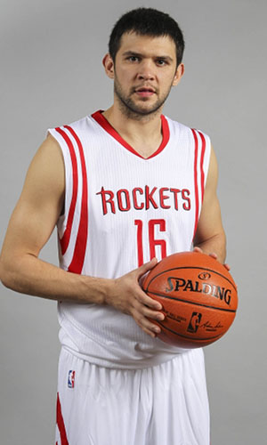

|  |
Матчи |
43 |
|
Передачи (всего/среднее) |
85 |
2 |
| В основе |
1 |
|
Подборы в защите (всего/среднее) |
79 |
1.8 |
| Время (всего/среднее) |
789:53 |
18:22 |
Подборы в атаке (всего/среднее) |
39 |
0.9 |
| Очки (всего/среднее) |
182 |
4.2 |
Подборы (всего/среднее) |
118 |
2.7 |
| 2-очковые броски (всего/среднее) |
38/91 |
0.9/2.1 |
Перехваты (всего/среднее) |
29 |
0.7 |
| 2-очковые броски (% реализации) |
41.8% |
|
Потери (всего/среднее) |
55 |
1.3 |
| 3-очковые броски (всего/среднее) |
31/106 |
0.7/2.5 |
Блокшоты (всего/среднее) |
13 |
0.3 |
| 3-очковые броски (% реализации) |
29.2% |
|
Блокшоты соперника (всего/среднее) |
13 |
0.3 |
| Штрафные броски (всего/среднее) |
13/18 |
0.3/0.4 |
Фолы (всего/среднее) |
71 |
1.7 |
| Костас Папаниколау |
Штрафные броски (% реализации) |
72.2% |
|
Коэффициент полезности (всего/среднее) |
155 |
3.6 |